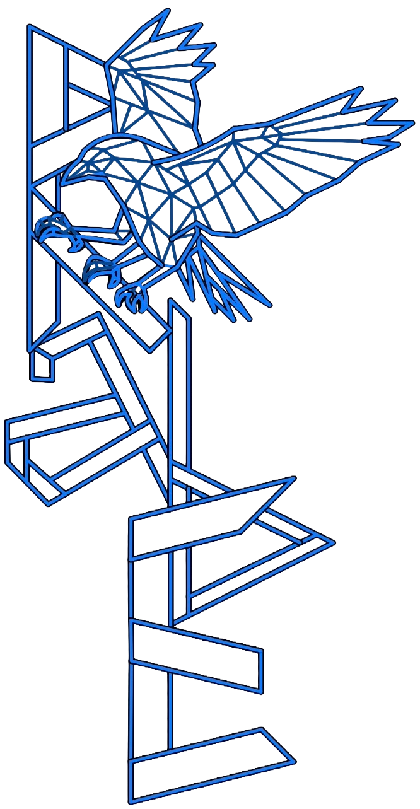

<button id="headerToggleBtn" class="header-toggle-btn" aria-label="메뉴 열기">☰</button>


<header>
  <div class="header-container">
    <!-- 로고 -->
    <div class="logo">
      <a href="/index.html" aria-label="Home">
        
      </a>
    </div>

    <!-- 검색: 버튼 클릭 시 펼침 -->
    <div class="search-box">
      <button class="search-toggle-btn" aria-expanded="false" aria-controls="searchWrapper" aria-label="검색 열기">🔍</button>
    </div>

    <!-- 페이지 선택 버튼 -->
    <div class="controls">
      <div class="page-select-wrapper">
        <button class="grid-button" id="gridToggleBtn" aria-label="페이지 선택">
          <div class="grid-icon">
            <span></span><span></span><span></span>
            <span></span><span></span><span></span>
            <span></span><span></span><span></span>
          </div>
        </button>
      </div>
    </div>
  </div>
</header>

<!-- 페이지 선택 라디오 메뉴 (헤더 외부) -->
<div class="radio-container" id="pageGrid" role="menu" aria-hidden="true">
  <div class="radio-labels">
    <input type="radio" name="page" id="page-1" data-url="https://RabE-log.github.io" checked />
    <label for="page-1">RabE</label>

    <input type="radio" name="page" id="page-2" data-url="/personal-journal/personal-journal.html" />
    <label for="page-2">Personal Journal</label>

    <input type="radio" name="page" id="page-3" data-url="/mechanik-note/mechanik-note.html" />
    <label for="page-3">Mechanik Note</label>

    <input type="radio" name="page" id="page-4" data-url="/language-log/language-log.html" />
    <label for="page-4">Language Log</label>

    <input type="radio" name="page" id="page-5" data-url="/side-project/side-project.html" />
    <label for="page-5">Side Project</label>
  </div>
</div>

<div class="search-input-wrapper" id="searchWrapper">
  <input type="text" placeholder="search Note..." />
  <button type="button" class="search-button">Go</button>
</div>